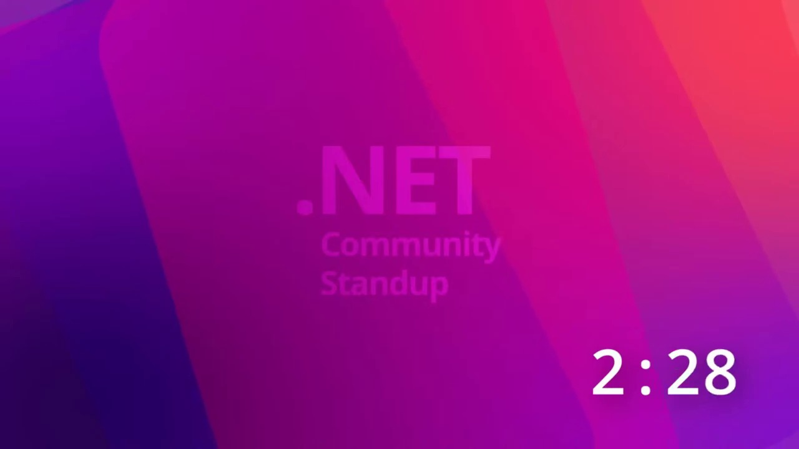
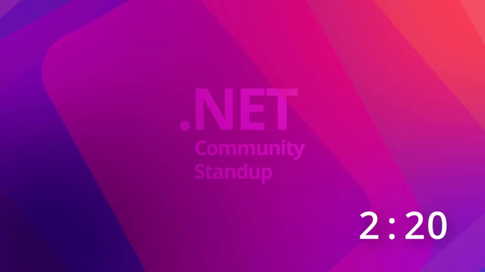
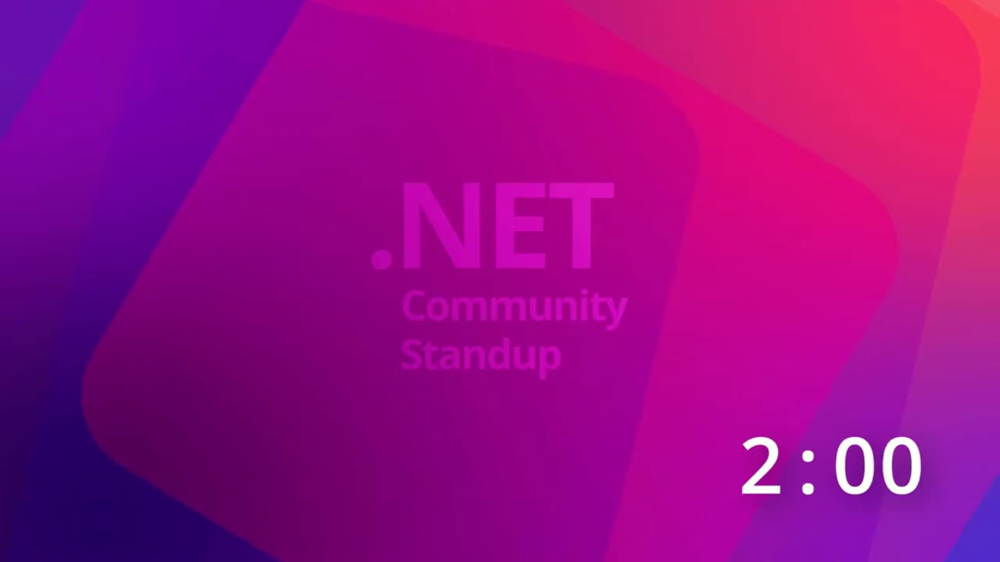
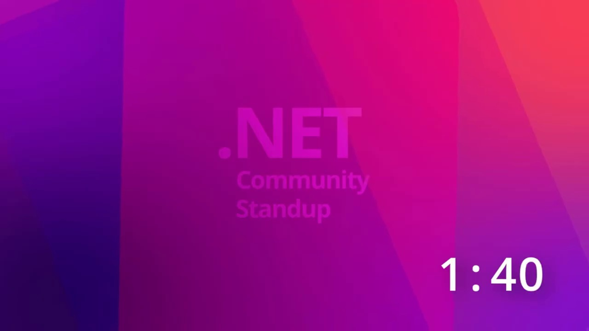

Key Moments






Summary & Script
.NET MAUI Engineering Team Live Stream: AI-Powered .NET MAUI Development with MauiDevFlow
Source: https://www.youtube.com/watch?v=vhrpjCJw1CY
Video ID: vhrpjCJw1CY
YouTube Video Summary: AI-Powered .NET MAUI Development with Copilot CLI
Overview
This video showcases how .NET MAUI developers can leverage AI, specifically the Copilot CLI and its "YOLO mode," to accelerate the development of mobile applications. The presenters, members of the .NET MAUI team, demonstrate building a mobile companion app for the .NET MAUI community website, "Maui Verse," using AI-powered tools. They discuss the evolving landscape of AI in development, the increasing adoption of AI-assisted code generation, and introduce a new tool called "Dev Flow" within the MAUI Labs repository.
Major Sections/Topics Covered
- Introduction and May 1st Greetings: The video begins with greetings and acknowledgments of May 1st, noting that some participants are taking a day off.
- Previous Projects and Updates: A brief mention of a previously built conference app and upcoming discussions with a conference for its adoption.
- Maui Day Event: Announcement of an upcoming .NET MAUI event in Krakow, Poland on May 29th.
- Team Introductions: Introductions of Gerald, Jacob, and Shane from the .NET MAUI team.
- AI in .NET MAUI Development:
- Discussion and demonstration of "vibe coding" and the term "agentic engineering" for AI-assisted development.
- Presentation of the .NET MAUI PR dashboard, highlighting the increase in Copilot-authored and Copilot-reviewed pull requests.
- Mention of the recent release, MAUI SR6, which incorporated significant AI contributions.
- Emphasis on the goal of making developers more productive with AI tools.
- Live Coding Demonstration:
- Project Goal: To create a mobile version of the "Maui Verse" website.
- Copilot CLI and YOLO Mode: Explanation of how to initiate Copilot CLI in "YOLO mode" for broader permissions, with a disclaimer about its usage.
- Prompt Engineering: Jacob shares a pre-prepared prompt for Copilot, detailing the requirements for the MAUI Verse app, including the URL of the .NET MAUI docs, the usage of MAUI skills and Dev Flow, and instructions to avoid emojis and community toolkit.
- AI in Development Philosophy: A discussion on the acceptance and benefits of using AI in development, emphasizing that the focus is on the outcome and verification rather than the generation method. The concept of "team vibecoded" is humorously introduced.
- Agentic Review: The idea that AI agents will review PRs before human developers, leading to a new workflow where developers' attention is only required after AI "agents are happy."
- Skipping Unit Tests: Jacob opts to skip writing unit tests for the demonstration to save time, with a note that this is not recommended for actual development.
- Introduction to Dev Flow (MAUI Labs): The presenters touch upon "Dev Flow" as a key feature within the MAUI Labs repository that will be explored further.
Key Takeaways
- AI is Revolutionizing .NET MAUI Development: The .NET MAUI team is actively integrating AI tools like Copilot CLI into their workflow, significantly increasing productivity and the number of code contributions.
- "Agentic Engineering" is the New Norm: The terminology and perception of AI in development are shifting from "vibe coding" to more professional terms, reflecting deeper integration and utility.
- Openness and Transparency: The .NET MAUI project aims to be open about its use of AI, sharing metrics and encouraging community feedback on AI-assisted contributions.
- Prompt Engineering is Crucial: Crafting effective prompts for AI tools is key to achieving desired results, as demonstrated by Jacob's detailed prompt.
- Acceptance of AI-Generated Code: There's a growing acceptance within the development community and the .NET MAUI team to use AI-generated code, provided it's verified and contributes to productivity.
- Dev Flow is a Promising New Tool: A new tool called "Dev Flow," integrated into the MAUI Labs repository, is highlighted as a significant advancement for MAUI development.
Notable Quotes
- "Vibe coded this. Let me see if I can share my screen real quickly. Of course, he vibe coded it because that's what we do."
- "Agentic engineering. Like it. That sounds professional enough to confuse people to think that we're actually still [laughter]."
- "Copilot authors is like already kind of like coming up there on we're we're we're going to halfway there and then Maui reviewer right so that's also a co-pilot that actually reviews the stuff."
- "It's now completely turned around. Uh, but absolutely agree like you know, as long as you're in control of what's happening looking at the output verify that everything works there's no shame in using copilot or AI to do all the things right."
- "Don't bother me until my agents are happy."
Podcast Script
JORDAN: Hey everyone, and welcome to another episode! Happy May 1st to all of you out there.
MIKE: Happy May 1st! It's great to have you join us today, especially if it's a public holiday where you are.
JORDAN: Today, we are diving deep into something super exciting that's been happening behind the scenes with .NET MAUI and AI.
MIKE: Yeah, we've been hearing a lot about AI integration in development, and specifically how the MAUI team is leveraging these tools.
JORDAN: Exactly. We're going to explore how they're using tools like GitHub Copilot, not just for writing code, but for entire development workflows.
MIKE: And we've got a live demo lined up, which always makes things interesting, right? We'll see some "agentic engineering" in action.
JORDAN: That's right. The team has been using AI for authoring and reviewing pull requests, and they're even confident enough to release this into production.
MIKE: That's a huge step! It sounds like they're building a lot of trust in these AI tools, and that's something a lot of us are grappling with.
JORDAN: Absolutely. They're aiming to make us, the developers, more productive and successful with MAUI apps by integrating AI.
MIKE: So, the goal today is to build a mobile companion app for the MAUI community website, Maui Verse, using these AI tools.
JORDAN: And they're kicking this off with a "YOLO mode" session for Copilot CLI, which is a bit of a wild card.
MIKE: YOLO mode – you only live once! I'm curious how that's going to play out, but they did mention it hasn't formatted any hard drives... yet.
JORDAN: They've prepared a detailed prompt that guides the AI, specifying things like the target URL and avoiding certain libraries or features.
MIKE: It's interesting how they're not trying to hide the use of AI anymore. It's a shift from "I used Copilot to help" to "Look what I built with AI."
JORDAN: I think that's a healthy evolution. As long as you're in control and verifying the output, there's no shame in leveraging these powerful tools.
MIKE: Definitely. It's like the whole ecosystem is learning how to collaborate with AI, and that includes how we review and accept code produced by it.
JORDAN: They even have agents that review pull requests before the humans do! It's like a multi-layered AI defense system.
MIKE: "Don't bother me until my agents are happy." I love that! It sounds like a glimpse into the future of software development.
JORDAN: So, they've set up the prompt, specified the app name as "Maui," and are linking it to the Maui Verse website for context.
MIKE: And importantly, they're pointing it to the latest .NET MAUI docs, because the AI models might not be up-to-date with the newest releases.
JORDAN: It's also crucial that they're telling Copilot to use specific MAUI skills and the new Dev Flow tool, which is the star of today's show.
MIKE: Ah, Dev Flow! I'm really looking forward to hearing more about that and seeing how it integrates into the development process.
JORDAN: And a key instruction: no emojis in the generated code. A small detail, but it highlights how they're refining the AI's output for clarity.
MIKE: That's a great point. It's not just about generating code, but generating good code that meets specific project needs and style guides.
JORDAN: They're also explicitly skipping unit tests for this demo, but wisely cautioning viewers not to do that in their own projects.
MIKE: Absolutely. Testing is fundamental, but for a live demo showcasing AI capabilities, I get the decision to streamline.
JORDAN: We'll have to see how this MAUI Verse companion app comes together using these AI-powered tools.
MIKE: It's definitely a fascinating look at how AI is becoming an integral part of the .NET MAUI development pipeline.
JORDAN: So, some key takeaways: AI is being used for authoring and reviewing code, and the team is building confidence in these tools for production releases.
MIKE: And the MAUI team is dedicated to making developers more productive by integrating AI directly into their workflows, exemplified by tools like Dev Flow.
JORDAN: Thanks for joining us today, everyone! We hope you found this glimpse into AI-assisted MAUI development insightful.
MIKE: We'll catch you in the next one. Happy coding, and embrace the AI!